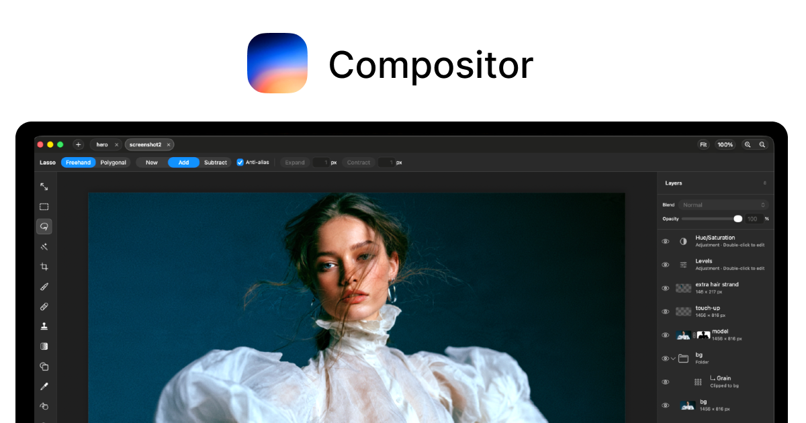

Compositor
A free, open-source Photoshop-style photo editor for Mac, built by one designer to escape his own Adobe bill.
Layer, mask and retouch a photo the way you would in Photoshop: Compositor opens in under a second, reads your old Photoshop files, and costs nothing, ever.

How does it work?
You need to layer, mask and retouch a photo, but Photoshop is a monthly bill and a multi-gigabyte install with background services always running.
Adobe's own system requirements ask for 10 GB of free disk space just to install it, before you've opened a single photo.
You double-click Compositor, or open a photo with it straight from the command line.
open -a Compositor photo.png opens that file directly in the app.
A photo - or an old Photoshop project file - plus the edit you want.
PNG, JPEG, TIFF, HEIC, camera RAW, or a Photoshop PSD/PSB file with its layers and masks intact.
It opens instantly and gives you the same layered editing workflow as Photoshop.
- Opens in under a second - no sign-in, no Creative Cloud service running in the background
- You build the image up in layers: masks, blend modes and adjustment layers like Curves and Hue/Saturation, the same toolset Photoshop uses
- You retouch with the Clone Stamp, the Spot Healing brush, or the built-in background remover, which runs right on your Mac with nothing uploaded
The README's own example: remove a background with the on-device tool - no cloud upload and no API key (a code some other tools make you sign up for).
A finished image, from an app a fraction of Photoshop's size.
- A finished, edited imageExport as a JPEG with a live preview, or Copy Merged to paste it elsewhere
- A small, fast app instead of a giant oneThe newest download is about 6.3 MB, next to Photoshop's own 10 GB minimum install
- Your old Photoshop files opened, not abandonedPSD and PSB files open with their layers, masks and blend modes preserved
What changes for me?
Without it
- Photoshop is a recurring subscription, plus a multi-gigabyte install with Creative Cloud running in the background.
- Most of Photoshop's toolbar is for jobs you don't do - 3D, video editing, generative fill - while the layer and retouching tools you actually use are buried under them.
With it
- Free forever and open source (MIT license) - download it, use it, no account and no trial that runs out.
- A few megabytes, and it opens in under a second with no background services.
- Just the compositing workflow: layers, masks, blend modes, adjustments and retouching brushes - the parts of Photoshop people who composite images actually use daily.
How hard is it to try?
Effort
- Download the .dmg from GitHub Releases (or from robbietilton.com/compositor) and drag Compositor into Applications - no account, no installer.
- Load a photo into it - JPEG, PNG, HEIC, TIFF or an old Photoshop PSD file - and try the Clone Stamp or the on-device background remover.
- Save your result as a JPEG, or keep working on the layered project - Compositor saves it in the background without getting in your way.
What it takes on your computer
- Space on disk
- About 6.3 MB to download - the size of the latest release's disk image, today. Early releases ran closer to 7 to 9 MB; the app has been shrinking as it matures. Several press write-ups repeat a rounder "12 MB" figure that doesn't match any of its 30 GitHub releases, so this page uses the measured current download instead.
- Memory while it runs
- No data found for an exact number. It's a native Mac app (Swift and Metal, Apple's own graphics tools) rather than a heavier cross-platform wrapper, so it should be light, but no source states a figure.
- Runs on
- Mac only: macOS 26 or later, on a Mac with Apple silicon (no Intel Mac support). Building it yourself needs Xcode 26 or later.
Paste this into Claude Code. It runs your safety scan first, then a 10-minute test.
/skillspector https://github.com/robbietilton/Compositor If that scan passes: download the latest release, load a photo into it, and try the background remover plus one adjustment layer (Curves or Hue/Saturation). Show me what the result looks like and anything that felt rough for an 11-day-old app. 10 minutes max, then stop and report back in plain English.
Should I?
Great if you...
- You composite, retouch or color-grade photos on a Mac and don't need Photoshop's full toolbox
- You want off the Adobe subscription and are fine with software that's 11 days old and still moving fast
Skip it if...
- You're on Windows or Linux - it's Mac-only, built with Apple's own tools, and needs a recent Mac with Apple silicon
- You need text layout, vector shapes, 3D or video editing - Compositor only does layered image compositing
Instead, you could look at
- GIMPThe long-running free image editor Compositor's own README names as the alternative its creator found too unfamiliar to stay in flow with - free on Mac, Windows and Linux.
- Affinity PhotoA paid, full-featured editor named in press coverage of Compositor as the closer comparison - it also does vector and text work Compositor leaves out, at a much larger install size.
Is it safe?
- Security advisories: 0GitHub's advisory list, checked Sep 27
- Searches for CVEs, vulnerabilities, malware and scams20 results read, including the national CVE database: nothing found
- Are the stars earned?5.9K stars, 15 contributors, 267 commits. findarepo's star check: looks organic - nothing unusual across fork ratio, issue activity and growth pace.
The flagged hits were unrelated Hacker News comments that use the word 'compositor'.
Watch out for
- Mac only, and a recent one. Needs macOS 26 or later on Apple silicon - no Intel Mac, Windows or Linux version.
- Not a full Photoshop replacement. No text tool, no vector shapes, no video timeline - it covers layered compositing and retouching, not everything Photoshop does.
- 11 days old and one main developer. Fast-moving - 30 releases already - but built and maintained by one person so far.
- A couple of rough edges showed up in reader comments on one blog post: one person could only export JPEGs and not save a project file, and another flagged a compatibility issue on an older Mac. Given how fast releases are shipping, these may already be fixed.
Who's using it, and for what?
It's 11 days old. Reviewers have written about it and a few readers left quick compatibility notes in blog comments, but nobody has published a named, verifiable account yet of using it to finish real work - real use is still early.
We couldn't find anyone describing real use of it yet. That's normal for a brand-new repo, and it's worth knowing.
Who's talking about it
- BlogOS X Daily: Check Out Compositor for Mac, a Free Lightweight Photoshop Alternative
- BlogGotBurnout: A Lightweight Open-Source Photoshop Alternative
- BlogExplainX: on Compositor and how Robbie Tilton planned it with an AI tool before hand-tuning the details
- Trendshiftrobbietilton/Compositor - trending stats
Sources
- Compositor on GitHub (README, requirements, releases), Sep 27
- Compositor - robbietilton.com, Sep 27
- Compositor Releases (download sizes), Sep 27
- findarepo: Compositor stats, growth and star check, Sep 27
- Trendshift: robbietilton/Compositor trending stats, Sep 27
- OS X Daily: Check Out Compositor for Mac, Sep 21
- GotBurnout: A Lightweight Open-Source Photoshop Alternative, Sep 19
- ExplainX: Compositor - open-source image editor, Sep 19
- Adobe Photoshop system requirements, Sep 27
- GIMP, Sep 27
- Affinity Photo, Sep 27